T he previous night’s heavy rainstorm had brought down several large trees in the forest and broken branches were strewn about the ground. Walking through the felled trees, Laly Joseph spotted an orchid clinging to one of the snapped boughs. She gently secured the plant and carefully transplanted it on to a standing tree.
At the Gurukula botanical sanctuary , where Joseph, 56, is head of plant conservation and the most experienced “rainforest gardener”, every plant is considered precious and an all-female team strives to give them the best chance of surviving an increasingly harsh climate.
Situated at the edge of Periya reserve forest in northern Kerala, the collectively owned private sanctuary was founded in 1981 by Wolfgang Theuerkauf, a German from Berlin who later became an Indian citizen.
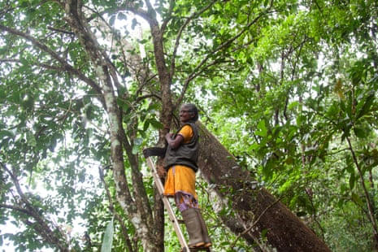Laly Joseph, the head of plant conservation at Gurukula Botanical Sanctuary, has spent most of her life learning about and caring for plants.
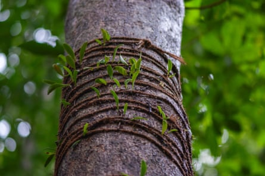A native orchid,Bulbophyllum xylophyllum, is tied to a tree in the sanctuary.
A self-taught conservationist, Theuerkauf sought to protect the 3 hectares (7 acres) of old-growth rainforest he had been given by a guru at a spiritual institution he attended, and began gathering rare and endemic plants from adjoining lands that were being cleared to make way for plantations and agriculture.
More than four decades later, the sanctuary has grown to 32 hectares and has also become a haven for more than 2,000 native plant species from southern India and particularly from the Western Ghats, a mountain chain recognised by Unesco as one of the world’s eight “hottest hotspots” of biodiversity.
Theuerkauf died in 2014, but he trained and mentored a number of women who have now become custodians of the sanctuary and its thousands of plants. A team of 20 women, mostly local people with some from Indigenous communities, look after the plants in the nursery and the garden.
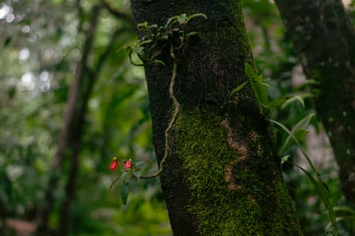Joseph transplanted thisImpatiens jerdoniae, an endemic species of an epiphytic balsam growing mostly on trees in shola forests of the Western Ghats, a few years ago.
Many have been working there for decades, including Joseph, who started 37 years ago when she was 19. “I was training to become an X-ray technician after school, but I wanted to get a job fast and took up work at the sanctuary because I also liked working with plants,” she says.
Known for the incredible richness of its biodiversity and high percentage of species unique to the area, the Western Ghats range stretches for 1,000 miles (1,600km) and hosts a variety of habitats from tropical forests to montane grasslands. However, this ecosystem is under constant and heavy threat from urban sprawl, industrial and mining activity and deforestation.
The Gurukula botanical sanctuary is part of the mountain range but the tiny enclave is a refuge for up to 40% of all plant species found in the entire Western Ghats.
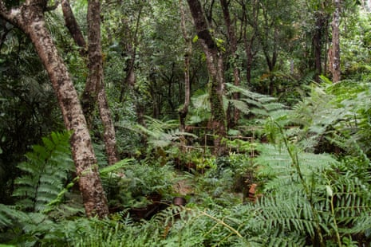An explosion ofAlsophila spinulosatree ferns, also known as flying spider-monkey tree fern. These are native species found in tropical and subtropical forests across Asia. An abundance of ferns can mean a healthy, high-quality habitat with minimal human disturbance.
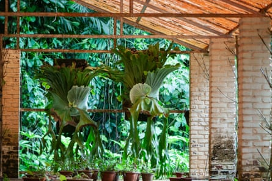Giant Staghorn Ferns (Platycerium grande), a large epiphytic fern usually found growing on trees and native to the Philippines.
The nursery and the garden sit amid soaring trees, and under their dense canopy, greenhouses and open areas host hundreds of varieties of orchids, ferns, succulents, carnivorous plants and many other groups.
Here, rare and endemic species such as Impatiens jerdoniae , which are either endangered or fast disappearing in the wild, thrive. According to Joseph, more than 260 fern species exist in southern India, of which more than 200 are grown in the sanctuary. Similarly, 110 of the 140 species of Impatiens – a genus of more than 1,000 flowering plants – found in southern India are present at the sanctuary.
While crop seed vaults are common around the world, nurseries for wild and native plants are rare, and many plant species quietly become extinct. This marks Gurukula out as a Noah’s ark for endangered plant species.
Like Theuerkauf, neither Joseph nor many of the other women who work at the sanctuary have any formal training in botany or conservation. Despite this, Theuerkauf has three species named after him in honour of his contributions to plant conservation and Joseph has co-authored at least seven scientific journals about new species.
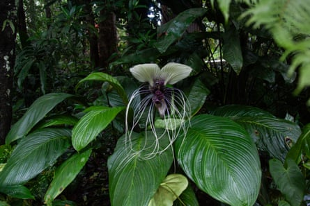Tacca integrifolia, or white bat flower, is native to tropical rainforests in south and south-east Asia.
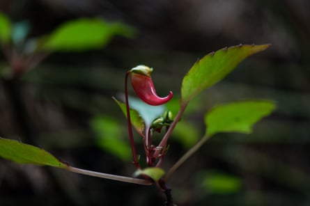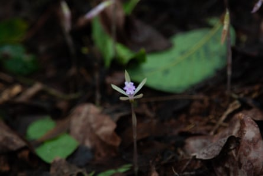Clockwise from top left: up to 110 Impatiens are grown at the nursery, including this flowering plant;Indrella ampulla, a tropical gastropod mollusc (semi-slug) found in the Western Ghats;Malaxis versicolor, also calledCrepidium versicolor,is a type of ground orchid widely distributed in the Western Ghats; known as trembling nervilia or round shield orchid,Nervilia crociformisis a small terrestrial orchid distributed throughout Indo-malesia
Most of the women have not been educated beyond 10th standard (age 15-16), but through patiently observing the plants and experimenting to recreate the natural conditions suitable for their growth, the team has acquainted itself with the secrets of the rainforest and figured out their own way of rainforest gardening.
They reel off scientific names of the species under their care and highlight the time when Titan arum – a giant plant popularly known as the corpse flower for the scent of rotting flesh it gives off to attract pollinators – bloomed in the reserve.
They have also developed their own methods of cultivation. “Others say fine compost is good for plants, but we found it wasn’t the case for us here. We found coarser compost works better. So we create our own compost by collecting dried and green leaves, which are then dried and sterilised over heat before putting them through a sieve,” says Joseph.
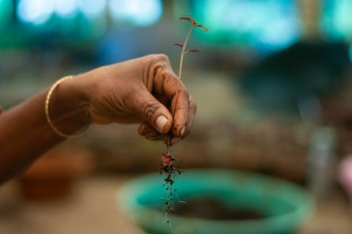Plants of the Sonerila genus are repotted.

An organic fertiliser made from cow urine is used to nourish the plants.
Sheena Mol PS is a senior gardener who joined the sanctuary 20 years ago, when she was just 15. Widowed early in her marriage, she looks after her two children and mother. “This is my first job, and I like it very much here,” she says, as she cleans Habenaria orchid tubers, before repotting them. “I was always interested in getting a job here.”
Before joining the sanctuary 10 years ago, Lakshmi PC, 43, worked at a coffee plantation where she earned just one rupee for every kilogram of beans she picked. At the sanctuary, she is responsible for more than 100 species of the Arisaema and Sonerila genera. “I do not wish to leave this place; it’s very peaceful here,” she says.
While plant conservation is the keystone of the Gurukula sanctuary’s work, habitat restoration and nature education are two important pillars, explains Suprabha Seshan, 58, who joined Gurukula in 1991 and now oversees the rainforest restoration.
She explains that the work done by the rainforest gardeners in conserving plants directly feeds into the enrichment and restoration of degraded landscapes around the sanctuary by helping create a rainforest ecosystem.
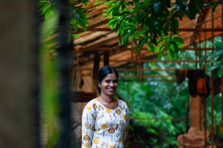Sheena Mol, Wolfgang Theuerkauf’s assistant for five years, is now one of the senior gardeners at the sanctuary, looking after orchids.
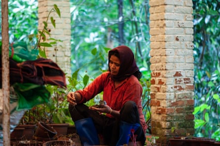Lakshmi joined the sanctuary 10 years ago, and looks after more than 100 plant species at nursery.
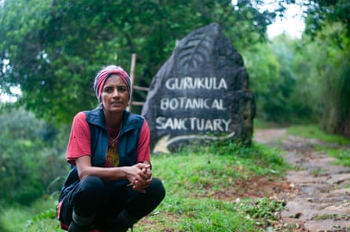Suprabha Seshan, who joined the sanctuary in 1991, is a rainforest conservationist and senior custodian.
“Forests are substantially more than trees,” says Seshan. “In the rainforest, you have the living biomass full of ants, full of termites, full of spiders, full of mosses that cloak the trees and thousands of other species. There are 5,000-6,000 species of flowering plants in the Western Ghats, thousands of fungi, hundreds of mammals and more.
“The forest is comprised of all this,” she adds.
Over the last few decades, the sanctuary has bought degraded land, tea and coffee plantations and other agricultural land adjoining the forest to rewild and allow to recover on its own. Situated at the edge of the reserve forest, tree dispersal happens naturally, allowing the forest to come back to life with little direct help.
“We’re restoring nature’s agency to heal itself, and then we are supporting certain species by working with nature’s agency. So we do some work, but nature’s doing most of the work. We do a little bit of cutting and clearing, but we largely respect the process of the natural world,” says Seshan.
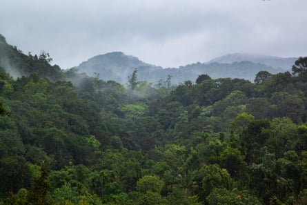The primary vegetation around Gurukula Botanical Sanctuary is wet evergreen, medium elevation rainforest.
“I think we have to respect nature’s own capacity. We know from previous extinction events it can be destroyed hugely and it can also come back. But to say that it will come back means that we have to stop the processes of destruction. The modern industrial world is not stopping – we’re increasing the processes of destruction,” she adds.
While the land beyond the sanctuary may not be under their control in this quiet biodiversity hotspot, the group of women are taking the long but secure road to complex rainforest recovery in an era when simply planting trees is seen as a quick and easy fix to climate change and deforestation.
“Because of climate change and because the forest is disappearing, we are going to lose these plants. We can’t protect everything but whatever we can, we are doing,” says Joseph.
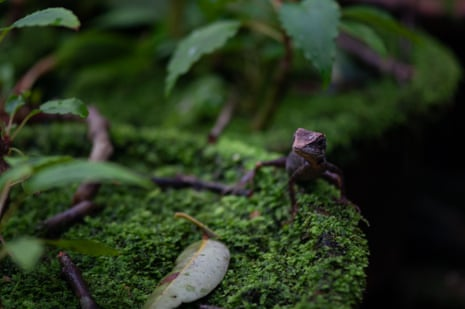A lizard belonging to theMonilesaurusspecies.